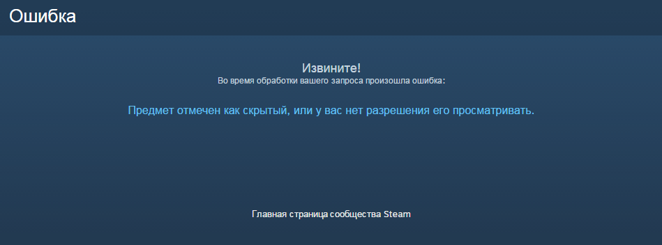

Где можно взять "прыгалку" по концовкам или рутам, если такова имеется?
Технические проблемы
Сообщений 31 страница 60 из 336
Поделиться322015-12-01 15:41:27
- Ньюфаг

- Откуда: Екб
- Зарегистрирован: 2015-11-01
- Сообщений: 44
- Пол: Мужской
- Возраст: 20 [1997-10-05]
- Skype: super-kun
- Последний визит:
Сегодня 14:46:32
Spitfire написал(а):
Где можно взять "прыгалку" по концовкам или рутам, если такова имеется?
Только в версии 1.1
В версии для стима "прыгалка" удалена, так как она является больше инструментом для тестеров, нежели для читателей.
Отредактировано Зуко (2015-12-01 15:42:25)
Поделиться332015-12-01 19:23:57
Зуко написал(а):
Только в версии 1.1
В версии для стима "прыгалка" удалена, так как она является больше инструментом для тестеров, нежели для читателей.Отредактировано Зуко (Сегодня 14:42:25)
Ссылку можно, пожалуйста)
Поделиться342015-12-01 19:41:08
- Ньюфаг
- Откуда: Екб
- Зарегистрирован: 2015-11-01
- Сообщений: 44
- Пол: Мужской
- Возраст: 20 [1997-10-05]
- Skype: super-kun
- Последний визит:
Сегодня 14:46:32
Spitfire написал(а):
Ссылку можно, пожалуйста)
Прошу - https://yadi.sk/d/tmo0Tk92kEWLM
Если что, на будущее, есть тред - Новые версии. Искать там.
Поделиться352015-12-01 19:41:44
Зуко написал(а):
Прошу - https://yadi.sk/d/tmo0Tk92kEWLM
Если что, на будущее, есть тред - Новые версии. Искать там.
Спасибо большое
Поделиться362015-12-01 19:56:10
Зуко написал(а):
Прошу - https://yadi.sk/d/tmo0Tk92kEWLM
Если что, на будущее, есть тред - Новые версии. Искать там.
Если не трудно, мне бы только её , отдельно, без всего мода, трафик-с
Поделиться372015-12-01 20:38:16
- Ньюфаг
- Откуда: Екб
- Зарегистрирован: 2015-11-01
- Сообщений: 44
- Пол: Мужской
- Возраст: 20 [1997-10-05]
- Skype: super-kun
- Последний визит:
Сегодня 14:46:32
Spitfire написал(а):
Если не трудно, мне бы только её , отдельно, без всего мода, трафик-с
Тут уже к Элди или товарищу Автору, ибо отдельно прыгалку не видел.
Поделиться382015-12-09 03:07:02
Очередная пара проблем в связи с перепилом коммона. Во-первых, во время побега разговор с Алисой о булочках, который даёт +1 ЛП Алисы и +10 кармы, висит под флагом кормёжки Алисы, которого теперь нет. Побег для рута всё равно необходим - без побега нельзя в третьем дне с Алисой за обедом сесть, то есть кармой за отказ от побега компенсировать это дело не удастся, и этих 10 кармы Локи в руте Алисы катастрофически не хватает. Во-вторых (и это гораздо печальнее), вместе со сценой кормления Алисы булочками умер флаг alt_day2_sl_keys_kept, что приводит к крашу во время танцев в седьмом дне Алисарута.
Трейс
I'm sorry, but an uncaught exception occurred.
While running game code:
File "game/scenario_alt/Scenario/Done/alt_route_dv_7dl.rpy", line 10671, in script
File "game/scenario_alt/Scenario/Done/alt_route_dv_7dl.rpy", line 10671, in python
NameError: name 'alt_day2_sl_keys_kept' is not defined-- Full Traceback ------------------------------------------------------------
Full traceback:
File "D:\IMPORTANT!!!\7dl-Alisa\renpy\bootstrap.py", line 265, in bootstrap
renpy.main.main()
File "D:\IMPORTANT!!!\7dl-Alisa\renpy\main.py", line 327, in main
run(restart)
File "D:\IMPORTANT!!!\7dl-Alisa\renpy\main.py", line 78, in run
renpy.execution.run_context(True)
File "D:\IMPORTANT!!!\7dl-Alisa\renpy\execution.py", line 509, in run_context
context.run()
File "D:\IMPORTANT!!!\7dl-Alisa\renpy\execution.py", line 288, in run
node.execute()
File "D:\IMPORTANT!!!\7dl-Alisa\renpy\ast.py", line 1486, in execute
if renpy.python.py_eval(condition):
File "D:\IMPORTANT!!!\7dl-Alisa\renpy\python.py", line 1338, in py_eval
return eval(py_compile(source, 'eval'), globals, locals)
File "game/scenario_alt/Scenario/Done/alt_route_dv_7dl.rpy", line 10671, in <module>
if (alt_day1_sl_keys_took == 1 or alt_day2_sl_keys_kept) and alt_day6_dv_7dl_sl_route:
NameError: name 'alt_day2_sl_keys_kept' is not definedWindows-post2008Server-6.2.9200
Ren'Py 6.16.3.502
Everlasting Summer 1.0
Поделиться392015-12-17 22:57:46
Версия 0.24а, в руте Алисы нашел ошибку в конце:
Ошибка
File "game/mods/scenario_alt/Scenario/Done/alt_route_dv_7dl.rpy", line 12857, in script
jump alt_day7_dv_ussr_epilogue
ScriptError: could not find label 'alt_day7_dv_ussr_epilogue'.
Как я понимаю, надо просто переименовать метку в строке 12859 из label alt_day7_dv_7dl_ussr_epilogue в alt_day7_dv_ussr_epilogue (или наоборот, ссылку в селекторе заменить).
Поделиться402015-12-18 07:37:22
- Хикикомори

- Зарегистрирован: 2015-10-21
- Сообщений: 142
- Пол: Мужской
- Последний визит:
2018-04-15 22:31:52
> Версия 0.24а
Почему не 0.16d?
Поделиться412015-12-19 11:54:35
Если это исправлено в 0.24c, я только рад.
Это мелочь, но фраза "и будет у тебя вся подушка в куриной жире" (Мику день 6) - выглядит очень смешно. Полагаю, это опечатка, а не шутка.
Отредактировано Vasya_M (2015-12-19 14:54:29)
Поделиться422016-01-06 19:43:16
- Ньюфаг

- Зарегистрирован: 2016-01-06
- Сообщений: 16
- Последний визит:
2017-01-08 22:02:34
Скачал 0,24d для версии 1.1, прошел "путь Слави" за Локи (первая предыстория). Пару раз разблокировано достижение "глубина, глубина...", затем "+\- полчаса" (два разных варианта), "что-то правильное", "твоя подделка" (это за 2 суток - проняло, да...). Вопрос такой: захожу после этого в список пройденных "рутов" - пусто. Захожу в список "достижений" - там только "вам досталось эроге" (или как-то так). Что не так?
Поделиться432016-01-06 20:14:52
- Ньюфаг

- Зарегистрирован: 2015-10-23
- Сообщений: 38
- Последний визит:
2017-05-01 18:58:39
AndrejPendragon написал(а):
Скачал 0,24d для версии 1.1, прошел "путь Слави" за Локи (первая предыстория). Пару раз разблокировано достижение "глубина, глубина...", затем "+\- полчаса" (два разных варианта), "что-то правильное", "твоя подделка" (это за 2 суток - проняло, да...). Вопрос такой: захожу после этого в список пройденных "рутов" - пусто. Захожу в список "достижений" - там только "вам досталось эроге" (или как-то так). Что не так?
Всё дело в том, что меню "Бесконечного Лета" отображает в списке "пройденного" и "достижений" только пройденные руты и достижения оригинальной игры, но не модов.
Впрочем, всё, уже пройденное в 7 Дней Лета, как и в других модах, в зашифрованном виде записывается в файл persistent. На практике это означает, что при повторном прохождении можно будет пролистывать уже прочитанное. Ну, а касаемо 7 Дней Лета - будут доступны некоторые подробности и сюжетные повороты, недоступные при самом первом прохождении.
Отредактировано openplace (2016-01-06 20:23:38)
Поделиться442016-01-06 20:23:32
- Ньюфаг
- Зарегистрирован: 2016-01-06
- Сообщений: 16
- Последний визит:
2017-01-08 22:02:34
О! Спасибо большое!
Поделиться452016-01-09 17:54:06
- Хикикомори
- Зарегистрирован: 2015-10-21
- Сообщений: 142
- Пол: Мужской
- Последний визит:
2018-04-15 22:31:52
Код:
if persistent.sl_cl_int_good:
menu:
"Мне снилась Славя…":
[много-много-букв]
$ persistent.sl_cl_int_good = TrueПоделиться462016-01-09 23:28:05
- Вахаха!~

- Откуда: Санкт-Петербург
- Зарегистрирован: 2015-10-21
- Сообщений: 344
- Пол: Мужской
- Активен 1 час 45 минут
Проблемы, вроде не вызывает. Но поправлю, да.
Поделиться472016-01-10 02:09:24
Здравствуйте! Не подскажете, пожалуйста, возможно ли выйти на альтернативный 1 день, не юзая спец. пункт меню?
Поделиться482016-01-10 02:23:45
- Ньюфаг

- Откуда: Москва
- Зарегистрирован: 2015-10-26
- Сообщений: 29
- Пол: Мужской
- Возраст: 24 [1993-08-16]
- Последний визит:
Сегодня 13:55:28
Alex646 написал(а):
Здравствуйте! Не подскажете, пожалуйста, возможно ли выйти на альтернативный 1 день, не юзая спец. пункт меню?
Нет, потому что сюжетно он будет доступен после прохождения всех 7дл-рутов, если не ошибаюсь, а еще нет 7дл Слави и Мику, так что это технически невозможно
Поделиться492016-01-10 13:16:37
- Хикикомори
- Зарегистрирован: 2015-10-21
- Сообщений: 142
- Пол: Мужской
- Последний визит:
2018-04-15 22:31:52
7dl-kun написал(а):
Проблемы, вроде не вызывает. Но поправлю, да.
Проблемы не вызывает, но некрасиво и чревато ошибками в будущем.
Поделиться502016-01-16 02:14:01
Добрый вечер. При попытке посетить страницу мода, выдает вот это.

Поделиться512016-01-16 04:45:53
- Одиночка

- Зарегистрирован: 2015-10-24
- Сообщений: 75
- Пол: Мужской
- Последний визит:
2018-03-28 20:32:30
CradeVescent написал(а):
Добрый вечер. При попытке посетить страницу мода, выдает вот это.
Ну так скачай себе версию 1.1 и не мучайся. Для чего стим?
Поделиться522016-01-16 11:19:47
Lansar_Scavana написал(а):
Ну так скачай себе версию 1.1 и не мучайся. Для чего стим?
Да много для чего. Для многих удобнее. Да и версия 1.2 работает побыстрее, чем 1.1.
Поделиться532016-01-16 20:01:30
- Хикикомори
- Зарегистрирован: 2015-10-21
- Сообщений: 142
- Пол: Мужской
- Последний визит:
2018-04-15 22:31:52
Думаю, уже всё заработало.
7длкун , а может сделать отдельную тему "Ошибки 1.2 и стима", ну и жестоко модерировать оффтопик. Я на неё подпишусь, и всем будет проще жить.
Поделиться542016-01-16 20:49:21
- Вахаха!~
- Откуда: Санкт-Петербург
- Зарегистрирован: 2015-10-21
- Сообщений: 344
- Пол: Мужской
- Активен 1 час 45 минут
Мысль интересная. Но неужели удобной системы стимовских форумов недостаточно шановным громадянам для решения всех их насущных проблем?
Поделиться552016-02-07 22:01:03
Народ, хелп. В 7дл после танцев я (вышел на Мику-рут) пошел в баню и в домик. Там меня встретил краш игры.
Вот трейс:
I'm sorry, but an uncaught exception occurred.
While running game code:
File "game/scenario_alt/alt_day3_slots.rpy", line 216, in script
ScriptError: could not find label 'alt_day4_neu_start'.
— Full Traceback —--------------------------------------------------------—
Full traceback:
File "C:\Program Files (x86)\IIchan Eroge Team\Everlasting Summer\renpy\execution.py", line 288, in run
node.execute()
File "C:\Program Files (x86)\IIchan Eroge Team\Everlasting Summer\renpy\ast.py", line 1376, in execute
rv = renpy.game.script.lookup(target)
File "C:\Program Files (x86)\IIchan Eroge Team\Everlasting Summer\renpy\script.py", line 547, in lookup
raise ScriptError("could not find label '%s'." % str(label))
ScriptError: could not find label 'alt_day4_neu_start'.
Windows-post2008Server-6.2.9200
Ren'Py 6.16.3.502
Everlasting Summer 1.0
Чо делоть?
Поделиться562016-02-07 22:19:08
- Вахаха!~
- Откуда: Санкт-Петербург
- Зарегистрирован: 2015-10-21
- Сообщений: 344
- Пол: Мужской
- Активен 1 час 45 минут
Удаляй папку scenario_alt и переставляй мод заново. В будущем попробуй читать инструкцию по установке.
Поделиться572016-02-07 22:25:58
Так дело в том, что я скачал готовую сборку. С уже встроенными модами.
Поделиться582016-02-07 22:36:29
- Вахаха!~
- Откуда: Санкт-Петербург
- Зарегистрирован: 2015-10-21
- Сообщений: 344
- Пол: Мужской
- Активен 1 час 45 минут
Бывает. Так или иначе, удаляй папку scenario_alt и переставляй мод. Ссылку на билд можно найти где-то неподалёку.
Поделиться592016-02-07 23:16:42
- Хикикомори

- Зарегистрирован: 2015-10-21
- Сообщений: 130
- Пол: Мужской
- Последний визит:
Сегодня 10:00:27
15551 "Пробуждение в автобусе - то самое, которого я всегда подспудно опасался, а потому не удивился ничуть, открыв глаза в холодном салоне."
По сюжету я приехал в больницу со Славей и Пиратом, а потом сразу в квартире очнулся, никаких автобусов.
И мне кажется, или Семёну то 25, то 28 по его мнению? Если так и задумано, то окей
Отредактировано Коллекционер (2016-02-07 23:19:19)
Поделиться602016-02-07 23:20:23
- Вахаха!~
- Откуда: Санкт-Петербург
- Зарегистрирован: 2015-10-21
- Сообщений: 344
- Пол: Мужской
- Активен 1 час 45 минут
Читал невнимательно, вот сразу и в квартире очнулся.